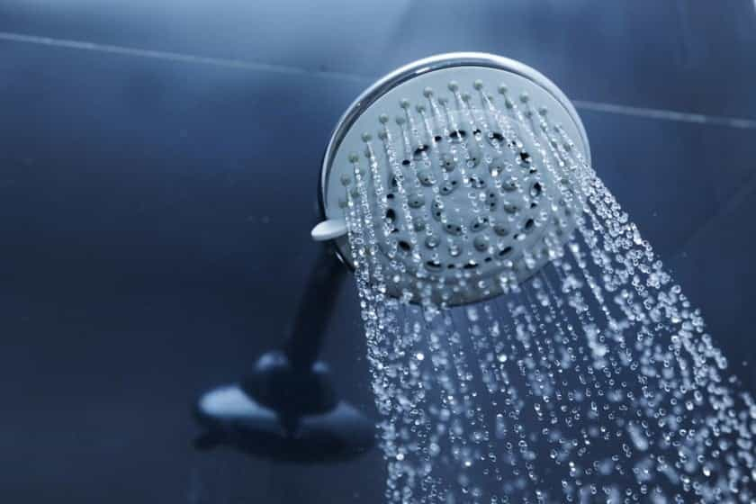

What is the first thing you do when you wake up? Do you act with intention and purpose or do you immediately reach for your phone and scroll through email and social media? If you answered with the latter, you are literally giving up your sovereignty and power every single morning. You are training yourself to be reactive and beta.
How you start your morning sets the tone for your entire day. As the adage goes:
Win the morning. Win the day.
In this article you’ll get the ultimate 6-step testosterone-boosting morning routine that will set the foundation for a day of discipline, productivity, and focus.
Ready?
Let’s do this.
Step 1 – Hydrate
The first thing you need to do upon waking is chug some H2O. The average male body is made up of 60% water and you have just spent a number of hours without it. Even slight dehydration can suppress your testosterone and growth hormone production. But getting hydrated is only half the battle. You also have to make sure that you’re not drinking estrogenic water.
Water is one of nature’s best solvents, i.e. the solids it comes into contact with eventually dissolve into it. This can be dangerous given the fact that a large portion of us drink water from plastic bottles. A lot has been said about plastics here at ROK, and for good reason – plastics are a silent killer of masculinity. They contain chemicals like BPA and phthalates, both of which exert potent estrogenic effects on the male body. Avoid drinking water from plastic bottles.
Ideally, you have access to spring water that is pure of chlorine, heavy metals, and contaminants. Findapsring can help you discover a spring near you. The next best option is to opt for a Pur filter to attach to your faucet or a Brita pitcher you can fill up and stick in the fridge. Either way, start your mornings with at least 12 ounces of pure, filtered water.
Step 2 – Make Your Bed
After getting hydrated and using the toilet, go ahead and make your bed.
Admiral McRaven, retired Navy Seal and author of Make Your Bed: Little Things That Can Change Your Life, said it best:
Making your bed will reinforce the fact that the little things in life matter. If you can’t do the little things right, you’ll never be able to do the big things right. And, if by chance you have a miserable day, you will come home to a bed that is made – that you made. And a made bed gives you encouragement that tomorrow will be better.
Unfortunately, I was unable to find any evidence to support the fact that making your bed boosts testosterone, but do it anyway. It will continue to build on the positive momentum you have moving forward.
Step 3 – Get Lit

Next up, get outside and soak some sun. Your skin synthesizes vitamin D upon exposure to sunlight and vitamin D is crucial for testosterone production. If you’re currently deficient in vitamin D – and chances are, you are – then topping up your levels is perhaps the simplest way to boost your testosterone.
“But Mo, I live in Alaska and the sun barely comes out. Does this mean I’m doomed to a life of low testosterone?”
Worry not my friend. If you live in a part of the world that doesn’t get much sun (or you’re just too lazy to go outside), opt for a daily dose of 2000-5000IU of vitamin D3 to help optimize your levels.
Step 4 – Breathe Deeply
Whether it’s work, family, or financial pressures all of us have something that we’re stressed about. The problem, though, lies not in the stress itself but in our inability to deal with it effectively. This leads to the stress becoming chronic. Chronic stress is a testosterone killer, but deep diaphragmatic breathing is a proven way to conquer it.
Diaphragmatic breathing is a central tenet of the Wim Hof Method. Wim Hof is a modern day alpha superhuman known for setting a number of extreme sports world records and climbing Mount Everest during a blizzard in nothing but his shorts. What’s more is that he has taught groups of men to achieve similar feats. I bought and completed Wim Hof’s 10-week program a while back, but diaphragmatic breathing is a practice that I’ve carried on with till today.
Here’s how to get started:
Inhale through your mouth and/or nose deep into your diaphragm and exhale without any effort. Maintain a consistent rhythm for about 30 breaths. You should begin to feel a slight lightheadedness and tingling sensations in your extremities. This is a sign that your blood is becoming hyper-oxygenated. At this point, take one last deep breath, exhale, and hold for as long as you can. When you feel the urge to breathe again, take a deep breath in, hold for 20-30 seconds, and let go. That is one full cycle of what’s come to be known as the Wim Hof Method.
I do three cycles of this every single morning. I also make it a point to track my breath retention progress. When I started, I could only hold my breath for 45 seconds. Today, I can hold it for over 3 minutes.
Step 5 – Hop Into a Cold Shower

The direct link between cold showers and higher testosterone levels is not conclusive, but there is some evidence to suggest that the testes perform better in cold temperatures. Also, cold showers are a proven way to combat inflammation.
But the biggest reason to start taking cold showers everyday is to exercise your willpower. I’ve been taking cold showers for about 3 years now and I still find myself resisting them. But after the shower is over, I always feel a sense of pride and accomplishment in overcoming that little voice in my head that didn’t want to do it.
As Aubrey Marcus writes in Own the Day, Own Your Life:
In the smithy of life, cold exposure is the anvil against which your character is shaped and your resolve is hardened, so that you might confront your chronic stress and conquer it more completely.
Step 6 – Skip Breakfast

If you believe that breakfast is the most important meal of the day, you’re still plugged into the bluepill world of mainstream consciousness.
Skipping breakfast is a proven way to boost testosterone, skyrocket growth hormone, ward of oxidative stress, regulate insulin, and increase cellular repair. You can read about the science behind all these benefits here.
Simply push your first meal back 4-6 hours after waking. If you get hungry in between, drink some black coffee to suppress your appetite. The second option is to go for the 16/8 method of intermittent fasting whereby you choose an 8-hour window within which to fit all your meals, e.g between 12pm – 8pm, 10am-6pm, etc.
Conclusion
Starting your day with these six steps will not only boost your testosterone levels, but will also help transform you into a more grounded and powerful version of yourself.
Read More: 10 Ways That Modern Society Lowers Your Testosterone Levels